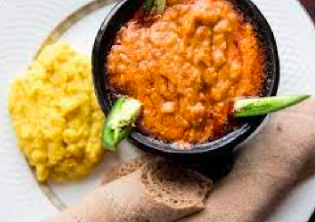
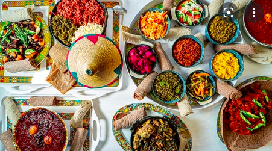
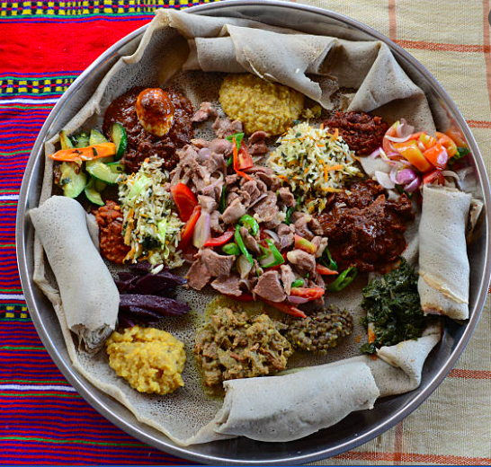
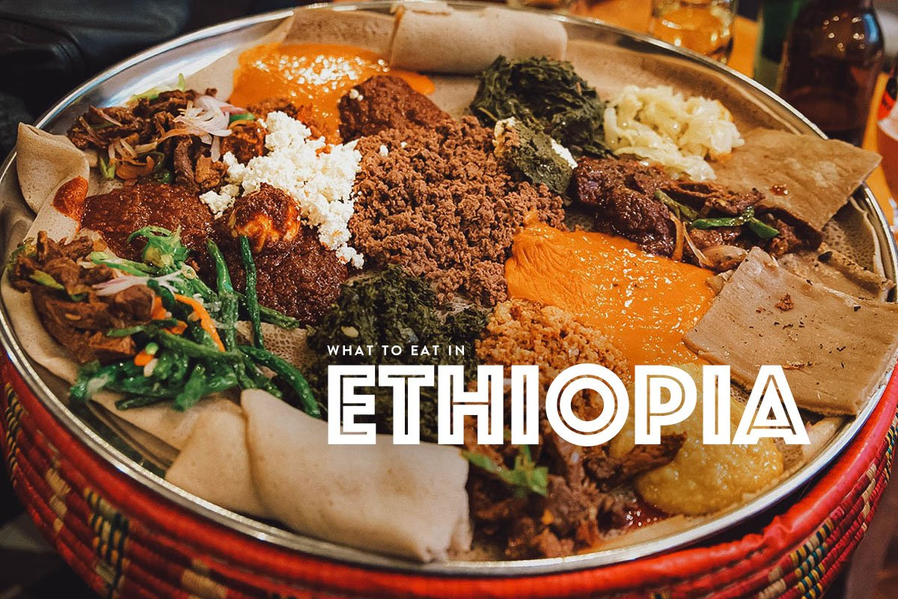

Injera
Ethiopian´s are famous for their Injera food type, which is a bread like food which is prepared from a local cereal known as "Tef".
Here is how the general recipe look like:
- First the Tef is grinded
- Then the tef flour is mixed with water.
- After this a yeast is added for better fermentation.
- Then it is baked using tradional methods.
- This injera can be served with different recipes.
Here are some images attached to show you how injera is served with other ingredients.

Fig. This is known as "shiro" and it is widely and frequently used in the country.

Fig. This image is "Injera" served with many kinds of food, locally known as "Ayinet".
Related images are attached below.


